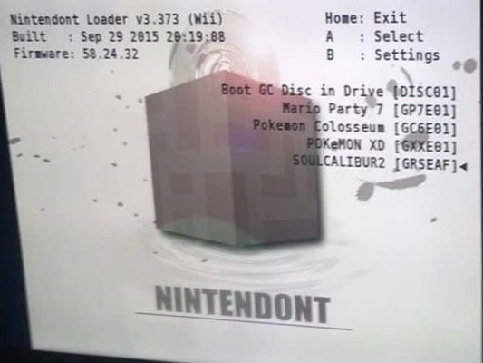

WELCOME TO MY WEBSITE!

Information Technology
IT encompasses using, developing, and managing computer systems, software, and data. It enables information processing, communication, and automation in various fields. IT is crucial in modern society, influencing work, communication, and entertainment. Professionals work with hardware, software, networks, and cybersecurity to create and maintain tech solutions.
Technical Advisory
Technical advisory provides expert guidance on specialized technical matters. Advisors offer insights and recommendations to help clients make informed decisions and solve complex problems in their respective fields. The goal is to ensure optimal technical solutions for achieving objectives.
My name is John
I study Computer Science.
I possess a longstanding history in computer technology. I began disassembling and performing system restores on computers prior to the age of 8. At the age of 12, I delved into P2P file sharing and also engaged in modding game systems. By the time I reached 18, I had established proficiency in computer repair, as well as the rooting and unlocking of phones. Presently, my focus lies in the domain of security research & web development.
I am an expert in the field of Information Technology
As an Information Technology expert, I possess extensive proficiency in designing, implementing, and managing advanced tech solutions. My expertise spans areas like network administration, cybersecurity, software development, and system optimization. I excel in problem-solving and ensuring optimal IT infrastructure to support organizational goals
I give technical advice
I am a technical advisor, providing expert guidance on various technical matters. This involves offering insights and recommendations to help clients or colleagues make informed decisions regarding specialized areas such as information technology, engineering, or other complex domains. I assist in problem-solving, decision-making, and navigating challenges within these technical fields
CLI (command-line interface)
I have extensive proficiency in utilizing the Command Line Interface (CLI) in Linux environments. I'm adept at navigating the file system, managing processes, configuring system settings, and automating tasks through shell scripting. Additionally, I have experience with various command-line utilities and possess a strong understanding of Linux commands and their respective options. This proficiency enables me to efficiently troubleshoot, administer, and optimize Linux-based systems
Secure Erase
I have comprehensive expertise in securely erasing drives and data. This involves employing industry-standard protocols and software tools to ensure that sensitive information is permanently and irrecoverably removed from storage media. My proficiency extends to various platforms and storage types, guaranteeing compliance with data privacy regulations and safeguarding against unauthorized access or data breaches.
Installing Operating Systems
I possess a thorough understanding of installing operating systems across various platforms. This involves tasks such as creating bootable media, partitioning disks, selecting appropriate installation options, and configuring system settings for optimal performance. I am well-versed in both standard and custom installations, ensuring compatibility with hardware and software requirements. Additionally, I have experience with post-installation tasks like driver installations and system updates to guarantee a smooth and secure operating environment.
Hacking Smart Phones
I have extensive expertise in advanced mobile device customization and optimization. This includes rooting phones, which grants elevated access for deeper customization. I'm skilled in flashing firmware to update or modify the operating system, and proficient in installing custom ROMs for enhanced features and performance. Additionally, I excel at carrier unlocking, enabling phones to be used with different carriers. These abilities demonstrate my proficiency in maximizing the potential of mobile devices, ensuring they operate at their highest capability according to user preferences and needs.

Hacking Game Systems
I possess advanced skills in modifying game systems, which involves customizing hardware or software components to enhance functionality or introduce new features. This includes tasks like hardware modifications, firmware updates, and software tweaks to optimize performance or enable new capabilities. I have a deep understanding of the technical intricacies involved in modding various game consoles, allowing me to implement modifications safely and effectively. Additionally, I have experience in troubleshooting and debugging to ensure the smooth operation of modded systems.
Kali Linux
I am proficient in using Kali Linux and its associated tools for various security and penetration testing purposes. This includes conducting vulnerability assessments, network scanning, and exploiting security weaknesses in controlled environments. I am well-versed in leveraging tools like Metasploit, Wireshark, Nmap, and others to identify and address potential security threats. Additionally, I have experience in utilizing Kali Linux for forensic analysis and digital investigations, making it a versatile asset in safeguarding systems and networks.
Contact Me:
This website was made in 2023 by John Jackson